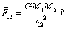
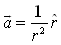
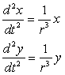

Newton's universal law of gravitation states that two spherical particles of mass M1 and M2 attracted each other with a force F12 that is inversely proportional to their separation squared and is directed along a line connecting their centers

The direction of the force on M1 is indicated by a unit vector "r-hat" pointing from M1 to M2. The proportionality constant G depends on the system of units and takes the value G = 6.67x10-11 m3/kg.s in the metric system.
Because two gravitationally interacting particles orbit in a plane about their common center of mass, we choose a polar coordinate system with the center of mass fixed at the origin. In many orbit problems one mass (the Sun) is much larger than the orbiting mass and is approximately stationary at the origin. This reduces the two-body problem to that of a one-body problem moving under the influence of a gravitational inverse square law force. Intermediate mechanics texts show that all two-body orbits problems can be reduced to an equivalent one-body problem so this inverse square law model is very general.
Applying Newton's Second Law F = M1a to the orbiting mass and using units such that M2G=1 the acceleration of the orbiting mass becomes
.
Rewriting this vector formula using Cartesian components and recognizing that sin(θ) = y/r, cos(θ) = x/r, and r = (x2+y2)1/2 in the plane of the orbit gives the following coupled differential equations for input into the Ejs model.

The Driven Harmonic Oscillator (SHO) model is designed to teach Ejs modeling. Right click within the simulation to examine this model in the Ejs modeling and authoring tool. See:
The Easy Java Simulations (EJS) documentation can be downloaded from the ComPADRE Open Source Physics collection and from the Ejs website.
This simulation was created by Wolfgang Christian using the Easy Java Simulations (Ejs) modeling tool. You can examine and modify this simulation if you have Ejs installed by right-clicking within a plot and selecting "Open Ejs Model" from the pop-up menu. Information about Ejs is available at: <http://www.um.es/fem/Ejs/>.